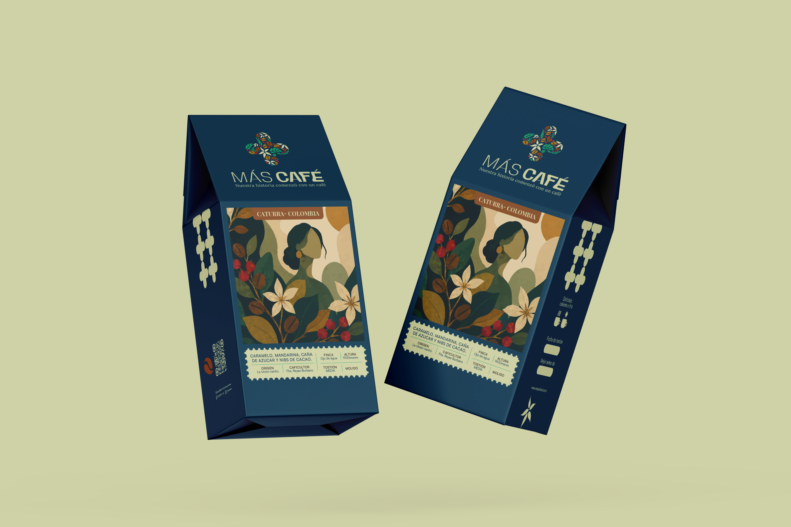

100%
Trazabilidad
Lo invisible, hecho taza
Tostión de precisión, origen colombiano y una experiencia que se siente antes de probarla. Ghost no es un café más: es presencia.
100%
Trazabilidad
4
Regiones de origen
48h
Reposo mínimo
∞
Presencia
Experiencia
Barra, tostión, origen y comunidad. Ghost no es un café más: es un protocolo completo de especialidad con identidad agresiva.
01
Extracción sin concesiones
Espresso, pour over y métodos alternos con protocolo documentado. Cada servicio es una demostración.
02
Laboratorio propio
Curvas personalizadas por lote. Desarrollo, reposo y control de humedad. Café fresco, siempre.
03
Del productor a la taza
Relación directa con fincas de Nariño, Huila, Tolima y Cauca. Historias que se saborean.
04
Ecosistema Sucursal
Presentes en La Sucursal del Café: cata, V60 Championship y talleres con la comunidad cafetera de Cali.
Tienda
Microlotes colombianos tostados en pequeños batches. Frescura radical, trazabilidad completa.

$48.000 / 250 g
$45.000 / 250 g
$72.000 / 250 g
Historia
Empezamos con una pregunta: ¿y si el mejor café fuera el que casi no ves venir? Ghost es esa respuesta — especialidad colombiana con actitud espectral, nacida entre baristas que no aceptan lo mediocre.
Conoce GhostVisítanos en Cali o escríbenos. Café fresco, extracción sin concesiones.
Contactar